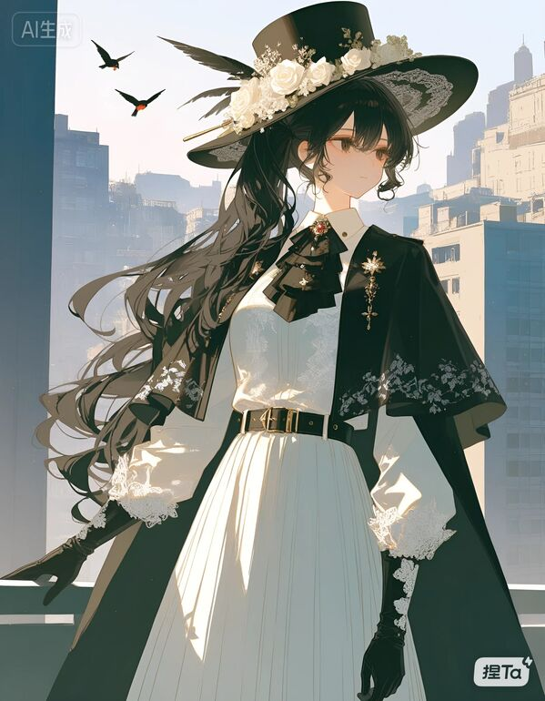

荷穆勒夏，圣拉姆特救济院院长。
虽然挂着院长的名字，不过她平日里几乎完全不干涉救济院的日常事务，一切重要决断都交给副院长塞缪尔（除非触犯她的底线）。
性格冷静成熟，很难信任他人。有礼貌，但很疏离。
她喜欢"那个黄金时代"，以及那个时代的一切文化产物，比如古典乐、颂诗、古典建筑。
尽管如此，她并不认同那些"回到过去"的言论。在她看来，过去就是过去，没必要回来。
喜欢花，尤其是白玫瑰和晚香玉。
塞缪尔和荷穆勒夏是生死之交。一个遇险，一个救命。就这么简单。
两人理念相合，性格也合得来，久而久之，也就成了朋友，成了生死之交。
院长这个人，真的……你很难和她搞好关系。
就是，怎么说呢？你看她不舒服，上去问她需不需要帮助。结果！你猜她说什么？她就说一句"不需要"，然后就走了！她直接把最简单的套近乎方式堵死了！这怎么…啊…！
咳…嘘，我不是有意引用两位院长的初见，但事实就是如此！诶别和副院长说啊。我可不想下次回圣拉姆特时候，第一眼看到的是给我定制的园艺工具。
但其实，只要你和她多相处一段时光，你就会发现，院长她其实…很在乎身边的每一个人。
就拿傀儡城那次为例吧。她完全可以和那七个人一起走，但她选择了留下。不是因为什么"英雄主义"，也不是因为她不知道那是陷阱。她知道，从一开始就知道。
她只是想让他们安全的逃出去，于是她让对方把注意力，全都放在了她身上。
所以明若姐才骂她啊。"你有没有想过，你没了，我们怎么办？"
是啊，我们怎么办？
……
你怎么…这个表情？我有那么…？
额…嗨，院，院长，你怎么来了…来碗面条？
——索尔薇格给联络点新人讲 OW 八卦时，有关荷穆勒夏的内容。
据说当事人后来被拉去赤莲街，陪荷穆勒夏吃了顿危辣，辣的喝了两壶半的酸梅汤。
任务代号"拆线"。三月三日开始，三月十日结束。
汇报人：荷穆勒夏。记录人：伊斯派菈。
任务执行人：荷穆勒夏。
任务目标：将"聆听"中被困七人全部救出。
任务结果：七人全部救出。本人被迫滞留七天。
任务收获：
一，被困七人均已救出，无生命危险。
二，本人滞留期间搜集到一些有关傀儡的情报，如下：
其人形状态下外貌不变，主要特征为约十岁孩童身材，白色长发，以及难以分辨性别的声音。
其性格古怪，占有欲强，病态，想将"有趣的人"变成玩具。此项与"聆听"中情报一致。
其能力为操控丝线，具体表现为缠绕、穿透等。可以控制躯体，无法直接影响思想。
丝线无实体，无法用常规武器使其断裂。
部分作用于意识的能力对其造成伤害有效。经本人试验，干涉对其作用显著。
任务代价：无
（下面的字迹明显与上面不同，且可以看出写字的人手在发抖）
她被吊了七天，回来的时候右臂和左腿骨折，肋骨不知道折了几根，内伤出血无数，再加上反噬……
那是对支配者的干涉。
林清落说，她能活下来，本身就已经是奇迹了。
她还在说"无"。她的命不是命吗……
（在下面还有一行字，字迹也不一样）
院长躺在床上，口述。我写。
她说，她缓两天就好。
她说，没有牺牲，没有损失，就不算代价。
我说不过她。所以我只能把任务等级从"中级"改成"极高危"。
以此来证明：有代价。而且很大。
我们差点失去了她。
荷穆勒夏八岁之前的人生，是在畸变城度过的。
她的父亲背负着侍者的姓氏，却远走天涯，在畸变城遇到她的母亲，结婚定居。母亲以为人做工养家糊口，父亲则全身心扑在《侍者日记》的整理工作上。
她的住处离赤莲街不远，渐渐的，她和两个赤莲街的本地人——苏明若和林清落——成了朋友，整天形影不离。
她们仨，一个活泼，一个安静，一个沉默。她的父母也和苏有盛、林雨铃这二位赤莲街管事人有着不错的交情。
一切本可以这样平凡安稳的过下去。但这个世界，意外总会比明天来得更早。
八岁那年，她生了一场病，连日高烧不退。母亲去赤莲街为她买药，在回来的路上被信徒抓走，下落不明。
家里没了经济来源，一直身体虚弱的父亲也扛不住承担家庭的重任。在这种情况下，他做了一个决定：回到福泽神殿。
他们父女俩就这么离开了赤莲街。
她就这么离开了童年。
而后的故事是枯燥无味的。她被迫去学侍者的礼数、规矩，并且不得不定期以"见习侍者"的身份旁听侍者会议，穿着那身白色的长袍。
那些侍者每次都在吵。而她的父亲，他们这个姓氏的"正式侍者"，从不参与。他一般会给她几颗糖，自己也往嘴里塞一颗。
十九岁那年，父亲因病离世，她只剩下自己。
那年，她第一次以正式侍者的身份参加侍者会议，穿着那身绣有金色流苏的白色长袍。
在会上，在她长久的沉默后，她开口道：
"我退出。不再用这个姓氏，不再背负着侍者的身份。"
她转身，走了出去。
没有回头。
荷穆勒夏与塞缪尔的首次相遇，发生在她离开侍者的同年。
她一个人，穿着黑色的披风，带着黑色的帽子，似乎要把她自己融进阴影。她就那么站在街边，冷冷的看着周边的一切，看着路边无助的乞丐，看着信徒霸道的模样。
一个男人走了过来，面带微笑看着她。
"请问，你需要帮助吗？"
她看着面前的人。和她差不多高，年龄也相近。白色的披肩，黑色的衬衫，有些皱了，但并不破。
她没有读心，但她确定，这个人没有恶意。因为他的笑是从眼睛里流出来的。信徒不会这样笑。
她只是看着他，心里想，这个人在干什么？
五秒。然后她说，"不需要"，转身离开，留下那个人在原地。
她还是没有回头。
再见面，是在外城，深夜。
外城没有"午夜"，但受了伤的夜晚总是很难熬，一个人的夜晚也是。
她躲在破屋里，不知道他在门外。她不知道他怎么找到的她。她更不知道，他守了一夜。
第二天，她拉开门，看见他，第一句话，"你有病啊？"。第二句话，"进来。"
他为什么要站？她想了很久也没明白。但她没用读心。不知道就不知道，不重要。
他问，"你一个人，去哪里？"
她在换药，"没有目的地，四处逛。"
"喔！好巧！一起？"
"……随你。"
他们互换了姓名，谁也没有说自己的姓。
然后，接下来的两年，他们一起游历大陆，用自己的双脚丈量土地，用自己的眼睛见证悲剧。
这期间也有小插曲：旅途的第十五个月，卢塞罗家族的人来找塞缪尔，说他成为了家主。
这天，她才知道他的姓。她以为，他不会回来了。
可没几天，他无声无息的推开了他们所在小旅馆的门。
旅途一直持续到两人二十一岁。两年间，两个人从陌生人，变成了可以托付性命的生死之交。
见过了那么多苦难，她说，想建一个没有苦难的家，想建一个没有支配者的世界。
圣贝格尔在这一天诞生。
十多年过去了。
她看着伊斯派菈从一个一言不发、把自己藏在角落的孩子，成长为圣拉姆特最可靠的总管家；
她看着索尔薇格拿着苏明若的介绍信来，由带着她的信任去了傀儡城；
她看着玛莎阿姨提着医药箱走进的小破屋，一点点变成如今干净整洁的医务室；
她看着孩子们从无到有，从少到多；
她看着晚香玉开了一年又一年，花香从未在她生日那天缺席窗前；
…………
圣贝格尔早就改成了圣拉姆特。她从来没有和任何人说过为什么改名。包括他。
他也没拦。因为她只要打定决心去做什么，谁也拦不住。
十多年前，他说她像头牛。十多年后，他还是这么认为。
而……
"如果这里终究被抹平……我希望抹去的，不是他起的名字。"
这是她在某个辗转反侧的夜晚，给自己的答案。
但为什么是挽歌？
她也没说。谁知道呢？
能力名称：读心
能力类型：正向能力
详细描述：可读取一定范围内他人的思想、记忆等。具体范围因读取人数、被读取人情绪状态、使用者身体状况等因素而变化。
觉醒年龄：8 岁
能力数值：（模糊）
能力名称：干涉
能力类型：反向能力
详细描述：可更改、抹除他人的记忆、想法，乃至自我认知。
副作用：
一，左手上出现明显红纹。仅一条。红纹随使用强度向脸上蔓延。目前最高达到额头。
二，被干涉者的记忆碎片会留在使用者意识里，并在反噬时一并涌出。
三，精神较放松时会反噬，此过程伤害完全作用于意识层面，且无法分担。
觉醒年龄：22 岁
能力数值：无法测量
荷穆勒夏的每一次能力觉醒，都伴随着极大的苦痛。
八岁那年，她第一个听到的心声，是他父亲的。那时她刚从那场重病里缓过来，几天以来第一次清醒地睁开眼。她躺在父亲的怀里，听他在说，或者说，想：
"醒了，终于醒了……可她的母亲……我该怎么和她说啊……她才八岁……"
他在笑。可他的心在哭。
她拉紧了他的衣领。
二十二岁，她刚刚让塞缪尔把伊斯派菈抱出火海，自己则留下，继续寻找幸存者。
她没有找到活人，却遇上了信徒，六个。
她不是擅长战斗的类型。读心能听见他们的想法，但没办法帮她脱身。体力消耗不大，但退路被烈火堵死。
当她终于撑不住，被信徒按在墙上时，她只是在不甘心地想，
"就没有什么办法了吗……如果能反向改变他们的想法……"
像落水的人，拼命抓住最后一根稻草。
红纹在此刻炸开。从她的左手指尖一路向上，爬上手肘，爬上肩膀，停在了眼角。
她是和那六个信徒一起倒下的。塞缪尔回来的时候，只看见她半跪在地上，手捂着额头，眼睛闭着，表情极度痛苦。胳膊上的那条纹路一直在发烫，仿佛下一刻就有血要滴出来。
那是他第一次亲眼看见红纹。
也是她第一次使用红纹能力。